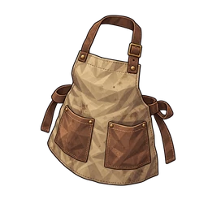

ผ้ากันเปื้อนหนา
N ลำตัว
ผ้ากันเปื้อนผ้าใบหนา กันหนามได้ประมาณหนึ่ง
ภาพรวม
| ส่วน | ลำตัว |
|---|---|
| ความหายาก | N |
| HP ที่ Lv1 | 10 |
| HP คงที่ต่อเลเวล | 1 |
| อัตราเพิ่มของ HP | x1.04 |
| กาชา | กาชาธรรมดา: ตั้งแต่ด่าน 31 (แบนเนอร์ 4, แบนเนอร์ 5, แบนเนอร์ 6, แบนเนอร์ 7, แบนเนอร์ 8, แบนเนอร์ 9, แบนเนอร์ 10) กาชาพรีเมียม: ตั้งแต่ด่าน 31 (แบนเนอร์ 4, แบนเนอร์ 5, แบนเนอร์ 6, แบนเนอร์ 7, แบนเนอร์ 8, แบนเนอร์ 9, แบนเนอร์ 10) |
สกิล
ไม่มีสกิล
HP แต่ละเลเวล
HP ที่เลเวล L = round(HP ฐาน x อัตราเพิ่ม^(L-1)) + floor(HP คงที่ต่อเลเวล x (L-1))
| Lv | HP |
|---|---|
| Lv1 | 10 |
| Lv10 | 23 |
| Lv20 | 40 |
| Lv30 | 60 |
| Lv50 | 117 |
| Lv99 | 565 |
ขีดจำกัดเลเวลเริ่มที่ 20 ได้ชิ้นซ้ำแต่ละชิ้นจะเพิ่ม 10 สูงสุด 99